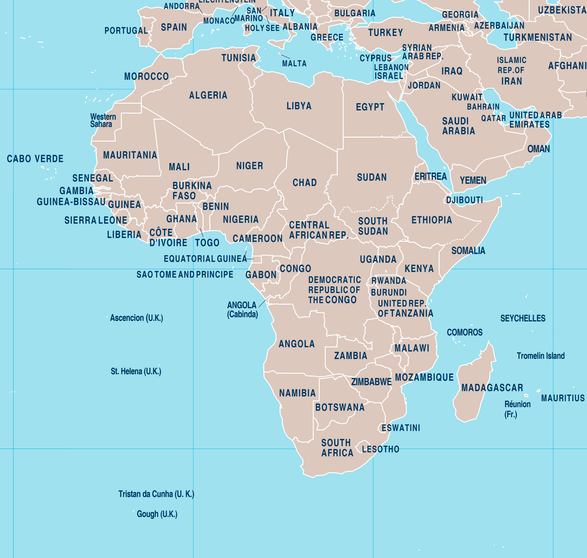

Introduction

The problem of food distribution
According to an article in an Italian newspaper, there is no global shortage of food, but it is not distributed fairly. The lack of food in Africa does not depend only on the war in Ukraine, but began to manifest itself before this event and the conflict has only accentuated its effects. The problem is that at the moment there is no problem of global food shortage, but of access to food. The increase in prices, the instability of international markets, the strong dependence of some countries on food imports represent a barrier to access to food and, ultimately, this depends on the structural causes of hunger: conflicts, the climate crisis and the inequalities that expose the most vulnerable groups to the devastating effects of economic shocks.
With our visualization we want to show the African countries with the highest food prices so that we can later analyze the reasons and act accordingly. An example of food prices that are too high could be caused by the difficulty of transport, which if improved could guarantee a better quality of life for many people. The purpose of our visualization, accompanied by appropriate analyses, is therefore to select those countries that need immediate action.